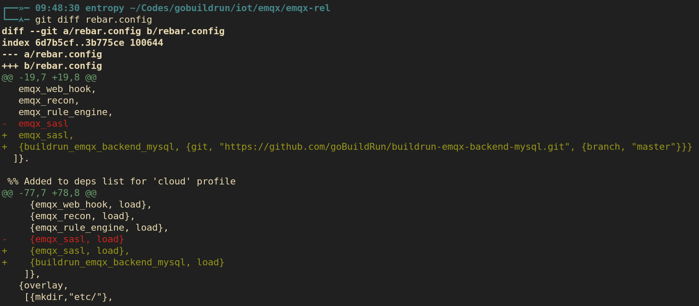
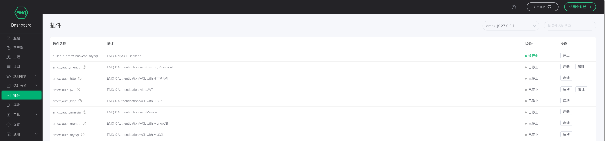

emqx mysql 插件
erlang 环境配置
erlang 推荐使用 22 版本，经过测试用 23 版本编译出来运行有问题。各平台安装 erlang 详情请参考官方文档。 linux 系统可以使用 kerl 脚本安装，构建最新版本的 emqx 时注意编译的 gcc 版本不能用 10，编译通不过，推荐用 gcc-9
下载 kerl
curl -O https://raw.githubusercontent.com/kerl/kerl/master/kerl
chmod +x kerl安装 erlang
kerl update releases
# 如果直接构建报错，修改 ~/.kerl/builds/22.3/otp_src_22.3/Makefile
# 将 gcc 改为 gcc9
kerl build 22.3 22.3
kerl install 22.3 /opt/erlang/22.3
# 启用环境
source /opt/erlang/22.3/activate
# 设置环境变量，这样不用每次手动启用
echo 'source /opt/erlang/22.3/activate' >> ~/.bashrc安装 rebar3
curl -OL https://s3.amazonaws.com/rebar3/rebar3
./rebar3 local install
# 然后根据输出操作emacs 编辑器配置
需要安装 erlang 包，提供 erlang-mode，再安装 erlang-lsp
git clone https://github.com/erlang-ls/erlang_ls.git
cd erlang_ls && makeemqx 源码编译
先克隆仓库，由于我们使用 v4.1.2 版本，所以切换到该 tag
git clone https://github.com/emqx/emqx-rel.git
cd emqx-rel
git checkout v4.1.2
make
正常构建成功后，运行 _build/emqx/rel/emqx/bin/emqx console 启动 emqx
添加自定义插件
修改 rebar.config
{deps,
[ {buildrun_emqx_backend_mysql, {git, "https://github.com/goBuildRun/buildrun-emqx-backend-mysql.git", {branch, "master"}}}
, ....
....
]
}
...
{relx,
[...
, ...
, {release, {emqx, git_describe},
[
{buildrun_emqx_backend_mysql, load},
]
}
]
}
修改完成后重新编译，打开 localhost:18083 的插件栏可以看到 buildrun_emqx_backend_mysql 插件。
启用自定义插件
执行以下 shell 脚本可以启动 mysql 容器
#!/bin/bash
init_dir(){
docker run -d -e MYSQL_ROOT_PASSWORD="1qaz!QAZ" --name mysql_temp mysql:5.7
docker cp mysql_temp:/etc/mysql/mysql.conf.d $PWD/
mv $PWD/mysql.conf.d $PWD/mysql_conf
docker cp mysql_temp:/var/lib/mysql $PWD/
mv $PWD/mysql $PWD/mysql_data
docker stop mysql_temp && docker rm mysql_temp
}
main(){
if [[ ! -d mysql_conf || ! -d mysql_data ]]; then
init_dir
fi
docker run -d \
-p 3306:3306 \
-e MYSQL_ROOT_PASSWORD="1qaz!QAZ" \
-v $PWD/mysql_conf:/etc/mysql/conf.d:rw \
-v $PWD/mysql_data:/var/lib/mysql:rw \
--name mysql \
mysql:5.7
}
mainmysql 启动后执行以下 sql
初始化数据库 sql
CREATE DATABASE MQTT;
USE MQTT;
DROP TABLE IF EXISTS `mqtt_client`;
CREATE TABLE `mqtt_client` (
`id` int(11) unsigned NOT NULL AUTO_INCREMENT,
`clientid` varchar(64) DEFAULT NULL,
`state` varchar(3) DEFAULT NULL,
`node` varchar(100) DEFAULT NULL,
`online_at` datetime DEFAULT NULL,
`offline_at` datetime DEFAULT NULL,
`created` timestamp NULL DEFAULT CURRENT_TIMESTAMP,
PRIMARY KEY (`id`),
KEY `mqtt_client_idx` (`clientid`),
UNIQUE KEY `mqtt_client_key` (`clientid`)
) ENGINE=InnoDB DEFAULT CHARSET=utf8;
DROP TABLE IF EXISTS `mqtt_retain`;
CREATE TABLE `mqtt_retain` (
`id` int(11) unsigned NOT NULL AUTO_INCREMENT,
`topic` varchar(200) DEFAULT NULL,
`msgid` varchar(60) DEFAULT NULL,
`sender` varchar(100) DEFAULT NULL,
`node` varchar(100) DEFAULT NULL,
`qos` int(2) DEFAULT NULL,
`payload` blob,
`arrived` timestamp NOT NULL DEFAULT CURRENT_TIMESTAMP,
PRIMARY KEY (`id`),
UNIQUE KEY `mqtt_retain_key` (`topic`)
) ENGINE=InnoDB DEFAULT CHARSET=utf8;
DROP TABLE IF EXISTS `mqtt_acked`;
CREATE TABLE `mqtt_acked` (
`id` int(11) unsigned NOT NULL AUTO_INCREMENT,
`clientid` varchar(200) DEFAULT NULL,
`topic` varchar(200) DEFAULT NULL,
`mid` int(200) DEFAULT NULL,
`created` timestamp NULL DEFAULT NULL,
PRIMARY KEY (`id`),
UNIQUE KEY `mqtt_acked_key` (`clientid`,`topic`)
) ENGINE=InnoDB DEFAULT CHARSET=utf8;
DROP TABLE IF EXISTS `mqtt_msg`;
CREATE TABLE `mqtt_msg` (
`id` int(11) unsigned NOT NULL AUTO_INCREMENT,
`msgid` varchar(100) DEFAULT NULL,
`topic` varchar(1024) DEFAULT NULL,
`sender` varchar(1024) DEFAULT NULL,
`node` varchar(60) DEFAULT NULL,
`qos` int(11) DEFAULT '0',
`retain` tinyint(2) DEFAULT NULL,
`payload` blob,
`arrived` timestamp NOT NULL DEFAULT CURRENT_TIMESTAMP,
PRIMARY KEY (`id`)
) ENGINE=InnoDB DEFAULT CHARSET=utf8;
DROP TABLE IF EXISTS `mqtt_sub`;
CREATE TABLE `mqtt_sub` (
`id` int(11) unsigned NOT NULL AUTO_INCREMENT,
`clientid` varchar(64) DEFAULT NULL,
`topic` varchar(255) DEFAULT NULL,
`qos` int(3) DEFAULT NULL,
`created` timestamp NULL DEFAULT CURRENT_TIMESTAMP,
PRIMARY KEY (`id`),
KEY `mqtt_sub_idx` (`clientid`,`topic`(255),`qos`),
UNIQUE KEY `mqtt_sub_key` (`clientid`,`topic`)
) ENGINE=InnoDB DEFAULT CHARSET=utf8;
修改插件配置文件 _build/emqx/rel/emqx/etc/plugins/buildrun_emqx_backend_mysql.conf
##====================================================================
## MySQL Backend for EMQ 3.0
##====================================================================
## MySQL Server
backend.mysql.server = 172.17.0.2:3306
## MySQL Pool Size
backend.mysql.pool_size = 8
## MySQL Username
backend.mysql.user = root
## MySQL Password
backend.mysql.password = 1qaz!QAZ
## MySQL Database
backend.mysql.database = mqtt
## MySQL Query Timeout
backend.mysql.query_timeout = 10s
在 dashboard 插件栏点击启用 buildrun_emqx_backend_mysql 即可启用成功

反编译 emqx_backend_mysql 插件
emqx_backend_mysql 插件只有在企业版的 emqx 中才有，而且不开源，但经过测试发现可以反编译该插件来获取源代码
首先获取 emqx-ee 版本，从 docker 容器中获取编译后的插件
docker pull emqx/emqx-ee:4.1.1-alpine-amd64
docker run -it --name emqx-ee --rm emqx/emqx-ee:4.1.1-alpine-amd64 sh新开终端从容器复制插件
docker cp emqx-ee:/opt/emqx ./emqx
编写反编译脚本 erl-decompile
#!/usr/bin/env escript
main(BeamFile) ->
[FileName | _] = string:split(BeamFile, "."),
SourceFile = string:concat(FileName, ".erl"),
{ok, Fd} = file:open(SourceFile, [write]),
{ok,{_,[{abstract_code,{_,AC}}]}} = beam_lib:chunks(FileName,[abstract_code]),
io:fwrite(Fd, "~s~n", [erl_prettypr:format(erl_syntax:form_list(AC))]).
将脚本放到可执行目录，在 emqx_backend_mysql-4.1.1/ebin 目录下进行反编译
for f in *.beam; do erl-decompile $f; done执行成功后会生成 erl 源文件
构造插件
克隆插件模板，并重命名
https://github.com/emqx/emqx-plugin-template.git
mv emqx-plugin-template emqx_backend_mysql
将 emqx_backend_mysql/src 下的 erl 模板文件删除
将反编译出来的 erl 源文件复制到 emqx_backend_mysql/src 目录下，将原来 ebin 目录下的 emqx_backend_mysql.app 文件也一起复制过来
将 emqx_backend_mysql/src 目录下的 emqx_plugin_template.app.src 和 emqx_plugin_template.app.src.script 重命名
rm *.erl
cp path/to/ebin/*.erl ./
mv emqx_plugin_tempate.app.src emqx_backend_mysql.app.src
mv emqx_plugin_tempate.app.src.script emqx_backend_mysql.app.src.script
修改 emqx_backend_mysql.app.src 内容，无关紧要的可以先不用改
{application, emqx_backend_mysql,
[{description, "EMQ X Backend Mysql"},
{vsn, "git"},
{modules, []},
{registered, [emqx_backend_mysql_sup]},
{applications, [kernel,stdlib]},
{mod, {emqx_backend_mysql_app,[]}},
{env, []},
{licenses, ["Apache-2.0"]},
{maintainers, ["EMQ X Team <contact@emqx.io>"]},
{links, [{"Homepage", "https://emqx.io/"},
{"Github", "https://github.com/emqx/emqx-plugin-template"}
]}
]}.
最终 src 下的文件结构
src/
├── emqx_backend_mysql_actions.erl
├── emqx_backend_mysql.app
├── emqx_backend_mysql_app.erl
├── emqx_backend_mysql.app.src
├── emqx_backend_mysql.app.src.script
├── emqx_backend_mysql_batcher.erl
├── emqx_backend_mysql_cli.erl
├── emqx_backend_mysql.erl
└── emqx_backend_mysql_sup.erl
0 directories, 9 files
将从容器中复制出来的 emqx_backend_mysql 插件中的 include 和 priv 目录都复制到新建的插件目录
将 emqx 企业版的配置文件 /etc/plugins/emqx_backend_mysql.conf 复制到新插件的 etc 目录
搭建临时 git 服务
emqx 在构建时添加的插件需要能从 git 仓库中拉取，先在本地搭建一个临时的 git 服务用于测试
mdir -p ~/Downloads/Git/emqx_backend_mysql.git
cd ~/Downloads/Git/emqx_backend_mysql.git
git init --bare
git daemon --verbose --export-all --enable=receive-pack --base-path=/home/cheon/Downloads/Git这样一个临时的 git 服务就搭建好了，在新建的插件目录进行关联远程仓库并提交
git remote set-url git://localhost/emqx_backend_mysql.git
git add .
git commit -m "init"
git push origin master重新编译
修改 rebar.config
{deps,
[ {emqx_backend_mysql, {git, "git://localhost/emqx-backend-mysql.git", {branch, "master"}}}
, ....
....
]
}
...
{relx,
[...
, ...
, {release, {emqx, git_describe},
[
{emqx_backend_mysql, load},
]
}
]
}
修改完成后重新编译，打开 localhost:18083 的插件栏可以看到 emqx_backend_mysql 插件
测试插件
修改插件配置文件 _build/emqx/rel/emqx/etc/plugins/emqx_backend_mysql.conf
emqx_backend_mysql.conf
##====================================================================
## Configuration for EMQ X MySQL Backend
##====================================================================
## MySQL Server
backend.mysql.pool1.server = 172.17.0.2:3306
## MySQL Pool Size
backend.mysql.pool1.pool_size = 8
## MySQL Username
backend.mysql.pool1.user = root
## MySQL Password
backend.mysql.pool1.password = 1qaz!QAZ
## MySQL Database
backend.mysql.pool1.database = mqtt
## Client Connected Record
backend.mysql.hook.client.connected.1 = {"action": {"function": "on_client_connected"}, "pool": "pool1"}
## Session Created Record
backend.mysql.hook.client.connected.2 = {"action": {"function": "on_subscribe_lookup"}, "pool": "pool1"}
## Client DisConnected Record
backend.mysql.hook.client.disconnected.1 = {"action": {"function": "on_client_disconnected"}, "pool": "pool1"}
## Lookup Unread Message QOS > 0
backend.mysql.hook.session.subscribed.1 = {"topic": "#", "action": {"function": "on_message_fetch"}, "offline_opts": {"max_returned_count": 500, "time_range": "2h"}, "pool": "pool1"}
## Lookup Retain Message
backend.mysql.hook.session.subscribed.2 = {"topic": "#", "action": {"function": "on_retain_lookup"}, "pool": "pool1"}
## Delete Acked Record
backend.mysql.hook.session.unsubscribed.1= {"topic": "#", "action": {"sql": ["delete from mqtt_acked where clientid = ${clientid} and topic = ${topic}"]}, "pool": "pool1"}
## Store Publish Message QOS > 0
backend.mysql.hook.message.publish.1 = {"topic": "#", "action": {"function": "on_message_publish"}, "pool": "pool1"}
## Store Retain Message
backend.mysql.hook.message.publish.2 = {"topic": "#", "action": {"function": "on_message_retain"}, "pool": "pool1"}
## Delete Retain Message
backend.mysql.hook.message.publish.3 = {"topic": "#", "action": {"function": "on_retain_delete"}, "pool": "pool1"}
## Store Ack
backend.mysql.hook.message.acked.1 = {"topic": "#", "action": {"function": "on_message_acked"}, "pool": "pool1"}
## Max number of fetch offline messages
## max_returned_count = 500
## Time Range
## d - day
## h - hour
## m - minute
## s - second
## time_range = 2h
## backend.mysql.hook.session.subscribed.1 = {"topic": "#", "action": {"function": "on_message_fetch"}, "offline_opts": {"max_returned_count": 500, "time_range": "2h"}, "pool": "pool1"}
在 dashboard 插件栏点击启用 emqx_backend_mysql 即可启用成功，也可以通过命令行来启用
bin/emqx_ctl plugins load emqx_backend_mysql如果启用失败，可以查看日志文件 log/emqx.log.1
启用成功后，可以根据 官方文档 来测试该插件
构建镜像
emqx-rel 项目自带构建镜像的功能
make emqx-docker-build